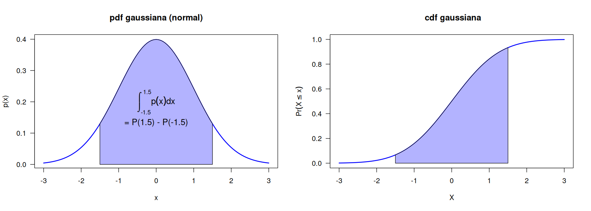

Suponer que \(X\) representa una cantidad desconocida de interés, como la temperatura de una máquina. Si los valores de \(X\) son desconocidos o cambian, decimos que \(X\) es una variable aleatoria, o VA. El conjunto de todos los valores posibles se denota como \(\mathcal{X}\), llamado espacio muestral o espacio de estados. Un evento es un subconjunto de valores del espacio muestral. Por ejemplo, si \(\mathcal{X}\) es el lado de un dado al ser lanzado, \(\mathcal{X} = \{ 1, 2, 3, 4, 5, 6 \}\), el evento “cae 1” se denota \(X = 1\), y “ver un número impar” se denota \(X \in \{ 1, 3, 4\}\), el evento “cae entre 4 y 6” como \(4 \leq X \leq 6\).
Nota: no confundir el espacio muestral \(\mathcal{X}\) con la VA \(X\). En el segundo caso, la VA toma valores numéricos, es una función de los elementos de \(\mathcal{X}\) que mapea de \(\mathcal{X}\) al conjunto de los reales o naturales. \(\mathcal{X}\) puede o no consistir en valores numéricos. Por ejemplo, si el espacio muestral \(\mathcal{X}\) son los posibles resultados de lanzar dos monedas tenemos \(\mathcal{X}=\{HH, HT, TT\}\). Al evento “cantidad de veces que sale caras, o \(H\)”, la variable \(X\) mapea de \(\mathcal{X}\) tres posibles resultados: \(X(HH)=2, X(HT)=1, H(TT)=0\).
2.1.1. Variables aleatorias y sus distribuciones
VA discretas
Si \(\mathcal{X}\) es finito o contable infinito (cada miembro de \(\mathcal{X}\) puede asociarse con un elemento de \(\mathbb{N}\)), entonces \(X\) es una variable aleatoria discreta. En este caso, denotamos la probabilidad de un evento que \(X\) toma como \(\text{Pr}(X=x)\). Definimos la función de masa de probabilidad (\(\text{\sf pmf}\) en inglés) como la función que computa la probabilidad de cada valor de la VA
Si \(\emptyset\) es un conjunto nulo, entonces \(\Pr(\emptyset)=0\).
Si \(A \subset B\), entonces \(\Pr(A)\leq \Pr(B)\).
Si \(A^c\) denota el complemento de \(A\), entonces \(\Pr(A^c)=1-\Pr(A)\).
Si \(A \cap B = \emptyset\) denota la intersección nula de \(A\) y \(B\), entonces \(\Pr(A \cup B)=\Pr(A) + \Pr(B)\), \(\Pr\) es aditiva para eventos disjuntos.
De otra manera, para eventos arbitrarios \(A, B\), \(\Pr(A \cup B)=\Pr(A) + \Pr(B)-\Pr(A\cap B)\).
Dos eventos \(A\) y \(B\) son independientes si \(\Pr(A \cup B)=\Pr(A)\Pr(B)\). Por ejemplo, lanzar una moneda dos veces. Cada lanzamiento es independiente del otro. Si queremos saber la probabilidad de que en ambos lanzamientos salga caras, esa probabilidad sería \(\Pr(H_1\cap H_2)=(1/2)(1/2)\).
Podemos imaginarnos la distribución de probabilidad de muchas variables aleatorias como el llenado de un arreglo multidimensional. Por ejemplo, en la siguiente imagen (adaptado de MML-6.2)
muestra dos variables aleatorias bivariadas, \(X\) (que puede tomar valores \(x_j, j = 1, 2, \dots, M\)) y \(Y\) (que puede tomar valores \(i=1, 2, \dots, L\)).
\(c_j\): conteo marginal en \(x_j\)
\(r_i\): conteo marginal en \(y_i\)
\(n_{ij}\): casos en la celda \(x_j, y_i\)
La probabilidad (conjunta) de que \(X=x, Y=y\) se define como
\(p(x, y)\) se lee “la probabilidad de \(x\) y \(y\)”, en ocasiones escrito usando notación de teoría de conjuntos como \(p(x \cap y)\). Cada entrada (cada celda) en la tabla se calcula contando la cantidad de casos que \((x_j,y_i)\) suceden conjuntamente
En la tabla, si contamos todos los casos de la fila \(i\) tenemos la cantidad total de veces que \(y_i\) sucede, y lo llamamos \(r_i\). Si contamos la columna \(j\) tenemos la cantidad total de veces que \(x_j\) sucede, y que llamamos \(c_j\).
La probabilidad marginal de \(x\), es decir, la probabilidad que \(X=x\) sin importar el valor de \(Y\) se escribe como \(p(x)\) y se calcula como sigue
\[
p(X = x_j) = p(x_j) = \frac{c_j}{N} \tag{2}
\]
El número de casos en la columna \(j\) es la suma de casos en cada celda en esa columna, por lo que \(c_j = \sum_i n_{ij}\) (dejando fija \(i\)). Por lo tanto,
\[
p(x_j) = \sum_{i=1}^Lp(x_j, y_i) \tag{3}
\]
A la ecuación (3) se le conoce como la regla de la suma. Notar que se fija la columna \(j\) y se itera sobre las filas \(i=1, 2, 3\), por lo que por cada columna \(j\) tenemos una probabilidad \(p(x_j)\), que llamamos la distribución marginal de \(x\).
Si consideramos los casos en los que \(X=x_j\), la fracción de casos en los que \(Y=y_i\) se escribe como \(p(Y=y_i | X=x_j)\), probabilidad que es conocida como probabilidad condicional de \(Y=y_i\)dado que \(X=x_j\). Se obtiene encontrando la fracción de puntos en una columna \(j\) que caen en una celda \((i,j)\) dada
\[
p(y_i | x_j) = \frac{n_{ij}}{c_j} \tag{4}
\]
Notar que \(c_j\) es la cantidad total de valores para los cuales \(X=x_j\), y \(n_{ij}\) es una celda particular. Con las ecuaciones (1), (2) y (4) podemos derivar la siguiente relación:
Crearemos un data frame que contenga posibles valores de \(X\) y \(Y\), así como sus frecuencias de ocurrencia. Después, usando la función slice_sample() del paquete {dplyr} tomaremos una muestra aleatoria. Básicamente, lo que hace slice_sample() es tomar filas (slices) del data frame original, solo que en este caso permitiremos que cada fila pueda ser seleccionada más de una vez. La cantidad de veces que cada fila puede ser seleccionada será, aproximadamente, wgts/sum(wgts) * n.
library(tidyverse)library(kableExtra)library(IRdisplay)# crear distribución conjunta {X,Y}data_for_sampling <-data.frame(Y =rep(0:3, times =3),X =rep(0:2, each =4))data_for_sampling <- data_for_sampling |>mutate(wgts =c(0, 3, 9, 3, 2, 18, 18, 2, 3, 9, 3, 0))# tomar una muestra aleatoria de la dist conjunta X,Y, usando wgts como pesos,# o frecuencia relativa de cada celda.set.seed(452) # para reproducibilidadsampled_data <- data_for_sampling |>slice_sample(n =10000, # 10k muestrasreplace =TRUE, # con reemplazoweight_by = data_for_sampling$wgts # pesos relativos de cada celda )# tabla originalsampled_data[, c(1, 2)] |>add_rownames(var ='ID') |>head(5) |>kbl() |>kable_classic_2(full_width = F) |>kable_styling() |>as.character() |>display_html()# crear una tabla de frecuenciatable(sampled_data[, c(1, 2)]) |>as.data.frame.matrix() |>rownames_to_column("Y/X") |>kbl() |>kable_classic_2(full_width = F) |>kable_styling() |>as.character() |>display_html()
── Attaching packages ─────────────────────────────────────── tidyverse 1.3.2 ──
✔ ggplot2 3.4.0 ✔ purrr 1.0.0
✔ tibble 3.1.8 ✔ dplyr 1.0.10
✔ tidyr 1.2.1 ✔ stringr 1.5.0
✔ readr 2.1.3 ✔ forcats 0.5.2
── Conflicts ────────────────────────────────────────── tidyverse_conflicts() ──
✖ dplyr::filter() masks stats::filter()
✖ dplyr::lag() masks stats::lag()
Attaching package: ‘kableExtra’
The following object is masked from ‘package:dplyr’:
group_rows
Warning message:
“`add_rownames()` was deprecated in dplyr 1.0.0.
ℹ Please use `tibble::rownames_to_column()` instead.”
ID
Y
X
1
2
1
2
1
0
3
1
1
4
3
1
5
0
1
Y/X
0
1
2
0
0
325
400
1
439
2544
1351
2
1273
2524
418
3
433
293
0
Ejercicios a mano
La segunda tabla muestra la tabla de frecuencias de la muestra total, ¿cuál es la probabilidad \(p(y=0, x=1)\)?
En general, la distribución condicional \(p(x | y=0)\) se puede obtener como sigue
sampled_data |># filtrar la filafilter(Y ==0) |># contar los casos de X condicionales a y=0; crea columna ncount(X) |># obtener la funcion de masamutate('p(x|y=0)'= n/sum(n)) |>kbl(escape =FALSE, booktabs =TRUE) |>kable_classic_2(full_width = F) |>kable_styling() |>as.character() |>display_html()
xt <-table(sampled_data[, c(1, 2)]) |>as.data.frame.matrix()# obtener la distribución conjunta de cada celda usando la eq 1xt_prob <- (xt /sum(xt))# imprimir la tablaxt_prob |>kbl(escape =FALSE, booktabs =TRUE) |>kable_classic_2(full_width = F) |>kable_styling() |>as.character() |>display_html()
0
1
2
0
0.0000
0.0325
0.0400
1
0.0439
0.2544
0.1351
2
0.1273
0.2524
0.0418
3
0.0433
0.0293
0.0000
La distribución condicional de \(x|y=y\) puede verse totalmente diferente que la distribución marginal \(p(x)\). En la siguiente imagen, tomada de Bishop (PRML-1.1), se ilustra la distribución de dos variables \(X\) y \(Y\). \(X\) puede tomar 9 valores posibles, y \(Y\) 2. La distribución marginal de \(X\), la distribución independientemente de qué valores tome \(Y\), tiene una forma más achatada (más amplia, con mayor varianza) que la distribución condicional a \(Y=1\).
VA continuas
Si \(X\in \mathbb{R}\) es una función real, se denomina variable aleatoria continua, y es más natural especificar que \(X\) se encuentre en un intervalo, e.g,, \(a \leq X \leq b\), dado que en este caso no se puede crear un conjunto contable de valores posibles que \(X\) puede tomar, pero podemos crear un conjunto finito de intervalos en la linea real, y asociar los eventos de \(X\) que están en esos intervalos.
Distribución acumulada (cdf)
Sea \(A = (X \leq a)\), \(B = (X \leq b)\) y \(C = (a < X \leq b)\) en donde \(a < b\). Tenemos que \(B\) es la unión de \(A\) y \(C\), es decir, \(B\) toma todos los valores que toman \(A\) y \(C\). Dado que \(A\) y \(C\) son mutuamente excluyentes, la probabilidad de \(B\) es
Con esto, podemos calcular la probabilidad de estar en un intervalo como
\[
\text{Pr}(a < X \leq b) = P(b) - P(a) \tag{9}
\]
La cdf gráficamente tiene esta forma, cuyo eje Y se lee “probabilidad de que \(X\) tome valores igual o menor a \(x\)”. Notar que esto es una suma acumulada (o integral) que termina en 1.
par(las=1)options(repr.plot.width=7, repr.plot.height=5)curve(pnorm(x, mean =0, sd =1),from =-3, to =3, main =" cdf gaussiana",xlab ='X', ylab =expression(Pr(X <= x)),col ='blue', lwd =2)
Función de densidad
Podemos definir la función de densidad de probabilidad, o pdf, como la derivada de la cdf
\[
p(x) \overset{\Delta}{=} \frac{d}{dx}P(x)
\]
Alternativamente, en vez de \(p(x)\) y \(P(x)\) se suele usar, para VA continuas, \(f(x)\) y \(F(x)\) respectivamente.
Y viceversa: la cdf como la integral de la pdf. Dada la pdf, podemos calcular la probabilidad de una variable continua en un intervalo finito como sigue
que es gobernada (es decir, su forma y sus valores quedan completamente especificados) por \(\mu\), la media o el valor central, y \(\sigma^2\), llamada la varianza (cuya raíz cuadrada es la desviación estándar \(\sigma\), y está en las unidades de \(x\) y \(\mu\)).El recíproco de la varianza es llamado precisión, \(\tau=1/\sigma^2\).
En la ecuación (10), el término \(\frac{1}{\sigma \sqrt{2\pi}}\) es una constante de normalización, que asegura que \(p(x)\) sume 1, por lo que
\[
\int_{-\infty}^\infty p(x)\text{d}x=1
\]
Las siguientes expresiones se cumplen en (10). El valor esperado de \(x\) es
La varianza está dada por \(\text{var}[x]=\mathbf{E}[x^2] - \mathbf{E}[x]^2\), por lo que \(\text{var}[x]=\sigma^2\).
En R se puede confirmar usando rnorm(n, mean=4, sd=2), que regresa una variable aleatoria normalmente distribuida con media de 0 y desviación estándar de 1
x <-rnorm(100000, 4, 3)mean(x) # media próxima a 4# la varianza de la ecuacion var(x) = E[x^2] - mu^2mean(x^2) -mean(x)^2# la varianza usando la función base de Rvar(x) # notar que no ingresamos la varianza en rnorm, sino sd
4.00522921391134
8.99872506891619
8.99881505706676
En la siguiente figura a la izquierda se representa una variable aleatoria normal con media 0 y desviación estándar de 1, conocida como distribución normal estándar, y representada como \(\mathcal{N}(\mu=0, \sigma = 1)\) o simplemente \(\mathcal{N}(0, 1)\). Para la densidad de probabilidad normal, en R usamos dnorm(x, mean, sd), que nos retorna la densidad en x.
A la derecha se representa el área equivalente en la cdf, usando pnorm.
options(repr.plot.width=7*2, repr.plot.height=5)par(las =1, mfrow =c(1, 2))# graficar la curva usando la función de dnorm; curve crea in-situ 101 valores# para x que van de from a to. Es idéntico a# x <- seq(from, to, length = 101); plot(x, dnorm(x, 0, 1))# figura a la izquierda, pdfcurve(dnorm(x, 0, 1),from =-3, to =3,col ="blue",ylab ="p(x)",lwd =2,main ='pdf gaussiana (normal)')from_x <--1.5to_x <-1.5# valores para x y y en el área sombreadasx <-c(from_x, seq(from_x, to_x, 0.01), to_x)sy <-c(0, dnorm(seq(from_x, to_x, 0.01)), 0)# crear área sombreada con sx y sypolygon( sx, sy,col ="#B3B3FF")text(x =0,y =dnorm(0, 0) /2,labels =expression(integral(p(x) * dx, -1.5, 1.5)),cex =1.2)text(x =0,y =dnorm(0, 0) /3,labels ="= P(1.5) - P(-1.5)",cex =1.2)# figura a la derecha, cdfcurve(pnorm(x, mean =0, sd =1),from =-3, to =3, main =" cdf gaussiana",xlab ='X', ylab =expression(Pr(X <= x)),col ='blue', lwd =2)from_x <--1.5# en rigor, debería ser -Infto_x <-1.5sx <-c(from_x, seq(from_x, to_x, 0.01), to_x)sy <-c(0, pnorm(seq(from_x, to_x, 0.01)), 0)polygon( sx, sy,col ="#B3B3FF")

En R, la función de densidad acumulada (\(\text{\sf cdf}\)) para la distribución normal se obtiene con pnorm(x, mean, sd) en donde x es un vector de cuantiles, que es el, o los, valores en \(x\) para el cual(es) deseamos obtener su probabilidad (básicamente, un cuantil es la función inversa de \(P(x)\)).
Para obtener el área sombreada en la anterior figura, usamos pnorm(b) - pnorm(a)
pnorm(1.5, mean =0, sd =1) -pnorm(-1.5, 0, 1)# mean = 0, sd = 1 están por defecto, pero los ponemos para mayor claridad
0.866385597462284
El área que cubre pnorm(1.5) va desde \(-\infty\) a 1.5, y el área de pnorm(-1.5) va de \(-\infty\) a -1.5. Matemáticamente, lo anterior se expresaría como
En contraste con las VA discretas, la probabilidad de que una variable continua \(X\in \mathbb{R}\) tome un valor particular, \(p(X = x)\), es 0. Es como integrar la función de densidad de la siguiente manera:
\[
Pr(a \leq X \leq a) = \int_a^b f(x)dx = P(a) - P(a)
\]
Por esta razón, con \(\text{\sf pdf}\) solo calculamos probabilidades en intervalos.
Para VA continuas, las reglas de suma y producto son
\[
\begin{align*}
\text{ \bf{regla de la suma}} \quad\quad &f(x) = \int_y f(x,y)\text{d}y \\
\text{ \bf{regla del producto}}\quad\quad &f(x, y) = f(y|x)f(x)
\end{align*}
\]
En donde \(f(x)\) es la función de probabilidad marginal, y se integra con respecto a\(y\). Lo mismo si queremos encontrar la marginal de \(y\) tenemos que integrar \(f(x,y)\)con respecto a\(x\).
Función acumulada de probabilidad conjunta
Sean \(X_1, X_2\) variables aleatorias continuas con función de distribución conjunta \(F(x_1, x_2)\). La función de distribución bivariante \(F(x_1, x_2)\) es
Dada \(f(y) = cy^2,\ 0 \leq y \leq 2\) y \(f(y)=0\) en cualquier otra parte, encuentre el valor de \(c\) para el cuál \(f(y)\) es una función de densidad válida.
Solución
Para obtener \(c\), requerimos un valor tal que se cumpla
Como una medida de inteligencia, a unos ratones se les toma el tiempo que tardan para pasar por un laberinto para llegar a una recompensa (alimento). El tiempo en segundos necesario para cualquier ratón es una variable aleatoria \(Y\) con función de densidad dada por
En donde \(b\) es el tiempo mínimo posible para recorrer el laberinto. Demostrar que \(f(y)\) tiene las propiedades de una función de densidad.
Solución
Dado que \(b\) es un tiempo, no puede ser negativo. Además, \(f(y)\) tiene el término cuadrático \(y^2\), que tampoco puede ser negativo, por lo que \(f(y) \geq 0\).
El mínimo valor que puede tener \(y\) es \(b\). Por lo tanto
En el ejemplo 1 determinamos que \(f(y)=(3/8)y^2\) para \(0\leq y \leq 2, f(y)=0\) en cualquier otra parte. Si la variable \(Y\) tiene esta función de densidad, encontrar \(\mu=\mathbf{E}[Y], \sigma^2=\text{var}[Y]\), recordando que \(\text{var}[x]=\mathbf{E}[x^2]-(\mathbf{E}[x])^2\).
Una partícula radiactiva se localiza en un cuadrado con lados de longitud 1. Denotar como \(Y_1, Y_2\) las coordenadas de la ubicación de la partícula. Un modelo razonable para el histograma de frecuencia relativa para \(Y_1, Y_2\) es la función bivariante de densidad
Obtener las funciones de densidad marginal \(f(y_1)\) y \(f(y_2)\).
Obtener la función condicional \(f(y_1 | y_2)\)
Demostrar si las variables \(Y_1, Y_2\) son independientes.
Solución
La marginal de \(f(y_1)\) se obtiene aplicando la regla \[
f(x) = \int_{-\infty}^\infty f(x, y)\text{d}y
\] Notar que para obtener la marginal de la variable \(x\) se integra la función conjunta con respecto a \(y\). Esto significa que trataremos a \(x\) como constante. En este caso, como tenemos \(y_1, y_2\) en vez de \(x, y\), la marginal sería \[
f(y_1)= \int_{-\infty}^\infty f(y_1, y_2)\text{d}y_2=\int_{0}^12y_1\text{d}y_2
\] Y trataremos a \(y_1\) como constante, y usamos la regla \(\int \text{d}x=x\)\[
f(y_1)=\int_{0}^12y_1\text{d}y_2=2y_1\int_{0}^1\text{d}y_2=2y_1\left(y_2\Big|_0^1\right)=2y_1
\] Para \(f(y_2)\) seguimos un razonamiento similar. \[
f(y_2)= \int_{-\infty}^\infty f(y_1, y_2)\text{d}y_1=\int_{0}^12y_1\text{d}y_1
\] Pero ahora integramos con respecto a \(y_1\). Aplicamos la regla \(\int x^n \text{d}x=\frac{x^{n+1}}{n+1}\)\[
f(y_2)=\int_{0}^12y_1\text{d}y_1=2\frac{y_1^2}{2}\Big|_0^1=y_1^2\Big|_0^1=1
\] La marginal de \(y_2\) es una constante.
La función condicional se puede obtener con la siguiente regla \[
f(x|y) = \frac{f(x, y)}{f(x)}
\] Por lo que para obtener \(f(y_1|y_2)\) necesitamos la densidad conjunta (que ya tenemos), y la marginal de \(f(y_2)\), que ya tenemos también. \[
f(y_1|y_2) = \frac{f(y_1, y_2)}{f(y_2)} = \frac{2y_1}{1}=2y_1
\] La condicional sigue siendo la conjunta porque la marginal es una constante.
La demostración de que las variables son independientes es trivial siguiendo la regla: \(x,y\) son independientes si y solo si\(f(x,y)=f(x)f(y)\)
¿Cuál es la probabilidad \(P(1 < Y_1 < 2.5)\) y \(P(1 < Y_2 < 2.5)\)?
Para cualquier \(Y_2>0\), ¿cuál es la función \(f(y_1|y_2)\)?
Solución
Primero notar que tanto \(y_1\) como \(y_2\) están en el intervalo \((0, \infty)\), por lo que esos son sus límites de integración. Formalmente, lo correcto sería encontrar el límite de la integral
\[
f(y_1)=\lim_{t\rightarrow \infty}\int_{-\infty}^{\infty}f(y_1,y_2)\text{d}y_2
\] Sin embargo, informalmente sabemos que \(e^{-\infty}=0\). Aplicamos la regla de los exponentes \(a^na^m=a^{n+m}\) a \(e^{-(y_1+y_2)}=e^{-y_1}e^{-y_2}\)
\[
f(y_1)=\int_{-\infty}^{\infty}f(y_1,y_2)\text{d}y_2=\int_0^{\infty}e^{-y_1}e^{-y_2}\text{d}y_2=e^{-y_1}\int_0^{\infty}e^{-y_2}\text{d}y_2
\] Para integrar lo anterior, consideramos la siguiente regla \(\int e^{-u}du=-e^{-u}\)\[
f(y_1) = e^{-y_1}\int_0^{\infty}e^{-y_2}\text{d}y_2=e^{-y_1}\left(-e^{-y_2}\Big|_0^\infty\right)=e^{-y_1}\left(-(e^\infty-e^0)\right)=\cdots=e^{-y_1}
\] El mismo razonamiento para \(f(y_2)\) nos da un resultado similar \[
f(y_2)=\int_{-0}^{\infty}e^{-(y_1+y_2)}\text{d}y_1=\cdots=e^{-y_2}
\]
Para obtener esta probabilidad (acumulada) necesitamos la regla
\[
P(a < X < b)=\int_a^b f(x)\text{d}x
\] En donde \(f(x)\) en nuestro caso corresponde a las marginales \(f(y_1)=e^{-y_1}, f(y_2)=e^{-y_2}\)\[
P(1<Y_1<2.5)=\int_1^{2.5}e^{-y_1}\text{d}y_1=-e^{-y_1}\Big|_1^{2-5}=-\left(e^{-2.5}-e^{-1}\right)=\cdots=0.285
\] Un razonamiento similar aplica para la segunda parte del ejercicio.
Usamos la regla del producto ya revisada: \(f(x|y)=f(x,y)/f(y)\). La conjunta es \(f(y_1,y_2)=e^{-(y_1+y_2)}=e^{-y_1}e^{-y_2}\) y la marginal \(f(y_2)=e^{-y_2}\)
\[
f(y_1|y_2)=\frac{e^{-y_1}e^{-y_2}}{e^{-y_2}}=e^{-y_1},\quad \text{para todo } y_2>0
\] Un razonamiento similar aplica a \(f(y_2|y_2)\).
Ejemplo de una normal
La temperatura promedio de una máquina es de 37°C, con una desviación estándar medida de 1.5. Suponiendo que la distribución de la temperatura puede ser aproximada por una normal, ¿qué tan probable es encontrar una temperatura de 35 o menos?
Solución
Queremos hallar la probabilidad \(P(X<35)\) sabiendo que \(X\sim \mathcal{N}(\mu=37, \sigma=1.5)\). Es decir
options(repr.plot.width=7*2, repr.plot.height=5)par(las =1, mfrow =c(1, 2))curve(dnorm(x, 37, 1.5),from =30, to =45,col ="blue",ylab ="p(x)",lwd =2,main ='pdf')from_x <-30# en rigor, debería ser -Infto_x <-35sx <-c(from_x, seq(from_x, to_x, 0.01), to_x)sy <-c(0, dnorm(seq(from_x, to_x, 0.01), 37, 1.5), 0)polygon( sx, sy,col ="#B3B3FF")text(x =35+1,y =dnorm(35, 37, 1.5),labels ='x=35',cex =1.5)# figura a la derecha, cdfcurve(pnorm(x, mean =37, sd =1.5),from =30, to =45, main =" cdf",xlab ='X', ylab =expression(Pr(X <= x)),col ='blue', lwd =2)sx <-c(from_x, seq(from_x, to_x, 0.01), to_x)sy <-c(0, pnorm(seq(from_x, to_x, 0.01), 37, 1.5), 0)polygon( sx, sy,col ="#B3B3FF")text(x =35+1,y =pnorm(35, 37, 1.5),labels ='x=35',cex =1.5)
El área se obtiene en R con el siguiente código, que usa la cdf normal, pnorm. El primer argumento es el cuantilq, el valor en el eje x del cual queremos saber el área bajo la curva.
pnorm(q =35, mean =37, sd =1.5)# ¿cuál sería la probabilidad de tener 37 o menos?
0.0912112197258678
Equivalentemente, en R se puede integrar la pdf con integración numérica
integrate( dnorm, # el primer argumento de integrate es la función que se va a integrarmean =37, # especificar ahora los argumentos de la función dnorm: media y sdsd =1.5, lower =0, # límites de la integraciónupper =35)